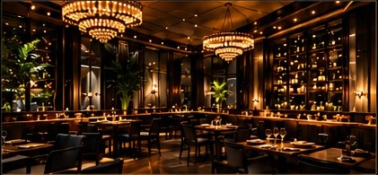

Fine Dining & Lounge
A Remarkable Culinary Journey
Exquisite flavors, Timeless ambiance.An experience like no other.

About Us
OUR STORY
Aurelia was born from a simple belief — that food has the power to bring people together. Our journey began with a vision to create a space where culinary artistry, elegance, and a luxurious ambiance come together in perfect harmony.